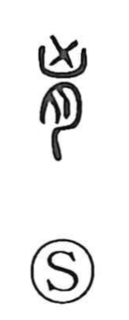

胸

Uncategorized
Kun: mune, muna | On: kyou
chest ・ breast ・ bosom
Explanation
Shirakawa traces 胸 back to 匈, the earlier graph for the chest. In ancient ritual practice, an X was painted in vermilion across a person’s chest at death to block malign spirits; this incantatory X is the element 凶. Combined with 勹, depicting the human body in profile, it formed 匈, naming the chest itself. By adding the flesh classifier 月 (nikuzuki) to indicate a part of the body, the character became 胸, meaning the chest or bosom. Thus the graph crystallizes a ritual mark on the torso into the concrete sense of the human chest.